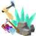

Building Your First City
The Town Square
Every city is started by building a town square. A flag is needed to build a town square. If you do not have a flag, the materials may be present to hand craft one. On a new emperor's homeworld, the materials needed are certainly present. Read How To Hand Craft a Flag for more information.
Planning a town is often easier in top-down view; use the Backspace key to switch between top-down view and the first-person view of your character. In top-down view, the [ and ] keys will change the view zoom level; the \ and Shift+\ keys will change the information overlayed on the terrain.
The Construction (F11) window offers controls for constructing buildings and roads. The column of small buttons on the right selects a category of buildings. Each of the large square buttons builds something. The lower section shows information about the building selected for construction; it also has buttons for selecting the construction material
Click the Town Square button to start building a town square. The Construction Materials section shows the town square requires only a flag. The terrain requirement is Land Not Near Anything which means the town square must be built entirely on land and it cannot be placed next to any existing building.
Use the hand cursor to select a location on the terrain to build the town square. Press the Enter key or hold the Ctrl key to use the hand cursor. A green box will appear at the build location on the terrain. Click on the ground to build the town square.
After the town square is built, the city can be expanded. The general rule for construction is that everything must be built next to a road or next to the town square. There are a few minor exceptions, such as parks and zoos.
Roads are used to expand the reach of the city. When starting a city, dirt roads should be used. Dirt roads require the least amount of labor and no building materials are needed. Keep in mind roads cannot be upgraded, and roads have different widths. You may want to use stone roads first as they are the next cheapest thing.
Use the hand cursor to select a starting location for the road, next to the town square. After clicking to place a starting location move the cursor to where you want the road to end and click again. Note that when you scroll the mouse wheel, a special kind of road section called a slab is created. They generally just look like ultra-wide roads but slabs are used to designate airports and vehicle spawn locations next to factories, this will come later.
After clicking on the ground, the terrain tile changes to a road construction appearance. Move your character to stand within the road construction area then display the Labor (F10) window. The left box is empty, showing that no materials are consumed. The right box shows things that affect the process but are not consumed. Bottom left is a check box labeled Employ Citizen. This has no effect yet because your town has no citizens. Bottom right shows 1 Labor Needed. Press the Work button to apply labor. Construction of the dirt road section is complete.
The Stone Age

Construction materials are needed to build most buildings. In this example we will build everything out of stone. Use top-down view to locate stone.
On the Construction window, click the Mine button to start building a mine where the stone is located. You may need to build dirt road sections until the road passes next to the stone. A mine can be up to four levels deep, depending on the number of rocks present in the terrain tile. The cursor shows a green number which is the number of levels to build. Roll the mouse wheel to change the number of levels. Build as many levels as possible at the stone outcropping.
After clicking on the ground, the terrain tile changes to a building construction appearance. Move your character to stand within the mine construction area. Construction of a mine does not require any materials, just labor. Press begin working until all levels of the mine are completed.
Mine a large amount of stone. If the mine is making anything other than stone, change it to mine stone. 100 units of stone is a good start. This is the most tedious step of getting your first town going. After the first town, you should rarely ever need to do this again.
The Comm (F3) window can query your town for its current inventory at any time. Select the Trade channel on the Comm and press the Inventory of City button. The city will respond.
Food and Shelter
A town with homes attracts people to become its citizens. Citizens fetch materials and apply labor to construction and manufacturing jobs of your town, freeing you from that tedium. Citizens need to have food to eat or they will not be very happy; they might even die.
Use the Construction window to build a two-level farm. 30 units of stone are needed per level. Push the Fetch button to move stone from the city's inventory to the construction site; you may have to push Fetch more than once. A two-level farm adds four homes and three jobs to the town and it produces food. The extra home will result in one extra citizen to do other jobs outside the farm.
More homes will be needed. Use the Construction window to build a set of four houses. Each house requires 10 units of stone. A patch of four houses adds a total of eight homes and one job to your town.
Time is needed for citizens to move into your bourgeoning town. Now is a good time to take a break from building the town. Go eat lunch or dinner, maybe even log-off for the night.
After some time, the town will have an abundant supply of food and stone in its inventory and there will be more people than jobs. Your little village will be ready for growth. From now on, you should only have to plan the buildings and roads and your citizens will do the work.
City Report
About every 13 minutes, your city mails a status report to you. Use the Mail (F5) window to view your city reports. City reports provide all the information needed to manage a city. City reports older than about 4 hours are automatically deleted from your mailbox. City reports show factors affecting the morale of the citizens. Morale determines whether the population will grow or shrink. A positive morale causes citizens to immigrate into the city. A negative moral causes citizens to emmigrate out of the city. Certain events that occur in a city are carried out at the time the city report is generated. Most importantly, this is when the population of the city changes due to migration of citizens.
Review the status report periodically as you continue building the city. Each new building will add jobs to the city. More homes and food will be needed as the number of jobs increases. The demands of the citizens will change.
Metal Age
Metal production is needed to advance any farther. Metal is an essential component needed for producing power and manufacturing vehicles and spacecraft. Your city cannot progress without metal.
Metal is smelted from ore. Ore is a mineral resource that is mined from the environment. Use top-down view to locate ore. Build a mine there, as many levels as possible. You may need to do some exploring to locate ore.
Build a smelter. The smelter will create metal using ore from the city's inventory. The resulting metal is stored back into the city's inventory.
The city's inventory can reveal weaknesses in your manufacturing potential. For example if your inventory accumulates a large amount of ore but has little or no metal, you probably need more smelters. If your inventory has no ore and little or no metal, you probably need to increase your ore production.
Electrical Age
Your city will grow very slowly until electrical power is generated. This is because the citizens do not work at night when there is no power. Once the city has power, the lights come on at night and the citizens work all the time. The pace of development of the city increases once it has electricity.
Resources and terrain at your city will determine which power plant is best to build first. If you are near a coast line, build a hydroelectric power plant. It is built with relatively simple materials and it does not consume any fuel. A tool tip showing the amount of each item needed appears if you hold the cursor over the row of Construction Materials icons.
If you are not near a coast line, coal power is probably the next best choice. This requires you to locate coal in your area and to build a mine there. Coal is also a necessary component of gunpowder, if you decide to make firearms.
Industrial Age
Your goal in building your first city is to develop space travel. To do that, you will need a spacecraft factory. Your city is a long way from producing everything needed to build a spacecraft factory. Let's do it anyway, as a way to figure out what is needed.
Build a road slab. To build a slab, scroll the mouse wheel while placing a road, it will allow you to place what appears to be a very wide road. A slab is required before you can build a spacecraft factory.
Build a spacecraft factory next to the road slab. The road slab becomes the spawn location for new spacecraft that are manufactured at the factory.
Look at the Labor window to review the requirements for the spacecraft factory. You do not have all that is needed. Build the industries that are necessary to make those things needed to complete construction of the spacecraft factory.
Your town will grow to considerable size by the time you complete this step. As you place each new industry, the Labor window will show what is required to build that new industry and it will show what is required to manufacture that new industry's products.
Keep working your way down the production chain until everything needed to complete construction of the spacecraft factory is being manufactured. It's not hard to figure out now that you have learned the basics of construction and manufacturing.
Rocket Age
By the time the spacecraft factory is finished, your town will have grown into a city. You are close to slipping the surly bonds of your world.
But wait! The spacecraft factory needs a spacecraft design to manufacture. You quickly read How To Design A Spacecraft and build a design studio. After spending a day designing the ultimate ship, you return to the spacecraft factory, design disk in hand, only to discover that two things are needed that you don't have, grav couplings and lumenite. You look up into the sky. Somehow, you know the things you need are out there.
The space rocket and all spacecraft will require hydrogen for fuel. Build a refinery to make hydrogen.
Harsh conditions exist in space and on other worlds. an environment suit will be needed to survive. Build an armoror to make environment suits and environment suit helments.
Once these things are finished, the rocket training mission starts automatically. The rocket training mission will only start if your character has less than 3 minutes of experience in a space rocket and your city has a new unused rocket, hydrogen, environment suits, and environment suit helmets. The mission provides the player with an environment suit and helmet if the character has never possessed them. It is a good idea to stay out of the rocket and wait for the rocket training mission to start automatically.
When the space rocket is manufactured, it spawns on the road slab next to the aircraft factory. Look at the space rocket and press E to enter it. Once inside, E will exit the rocket. While sitting in the rocket on the road slab, the V key will request service, which will refuel the rocket if the city has hydrogen in its inventory, and it will repair a portion of any damage to the rocket.
The space rocket is the most challenging space vehicle to fly, due to its inertial movement physics. When you enter the cockpit, you will initially be facing the sky ahead of the rocket. For a "Buggs Bunny" blast-off, turn around to face the ground behind you. Press Shift+PageUp to maximize the throttle. Press P to turn on the power. Once outside the atmosphere, press Delete to kill the throttle. The rocket drifts with inertia. Steer the rocket using the A, D, W, and S keys. Roll the rocket with Z and C. Arrow keys provide weak lateral movement thrust. Space bar applies brakes along the forward/reverse axis of the rocket. Q applies brakes laterally. Hold space bar and Q together until the rocket stops completely.
The tutorial is currently broken where you get to a point where you cannot continue as space rockets no longer hold position in space, they will fall to back to the planet. I recommend killing the NPC and just keeping the environment suit
Spage Age
The space rocket enables you to explore your solar system. You must find eludium and lumenite. Eludium is needed to manufacture grav couplings, an essential component of gravity drive units. Lumenite is an essential component of wormhole drive units.

Lumenite will be the hardest to find as it is very rare. When you find it, there will likely be an abundance of eludium in the area. Search the smallest coldest darkest moons for lumenite, that is where it is most prevalent. It is also found on the colder planets but eludium is unlikely to be found nearby on a planet that has an atmosphere. Lumenite glows bright blue in the dark. Eludium is most prevalent where there is little to no atmosphere. Lumenite and eludium are mineral resources so top-down view will show them along with stone and other rocks.
When you find lumenite and eludium, Continue to the next guide.
Next (How Tos/Building a Moonbase) ->Your first solar system is guaranteed to have eludium and lumenite. However, due to the way rock resources are distributed, it is remotely possible that the only lumenite in the system is in a location that cannot be mined. Here are some suggestions if you find yourself in this rare "stuck" situation:
- If you find lumenite but can't build a mine there, forage the lumenite you need by hand. Go to a retail store and use the Comm to sell the lumenite to the town. It will be stored in the town's inventory, where it can be fetched by the spacecraft factory.
- Design a spacecraft that does not require lumenite. Lumenite is only needed for wormhole drives. You could then dead-head to the nearest star in that ship and cross your fingers. Plan ahead. Take everything you need, including colonists.
- Fly the space rocket to another solar system. This sounds insane but it has been done many times. Carry extra cans of hydrogen with you; the V key will refuel your vehicle using items in your inventory. The + shaped stars can be reached directly. Size is based on distance; the larger the +, the closer the star is to you. The rocket takes about 6 minutes to reach light speed at maximum throttle; the speed reading on the HUD will stop increasing at light speed. Turn off the engine and coast until you are near enough to the destination to begin braking; as with accelerating, it takes about 6 minutes to decelerate from light speed.